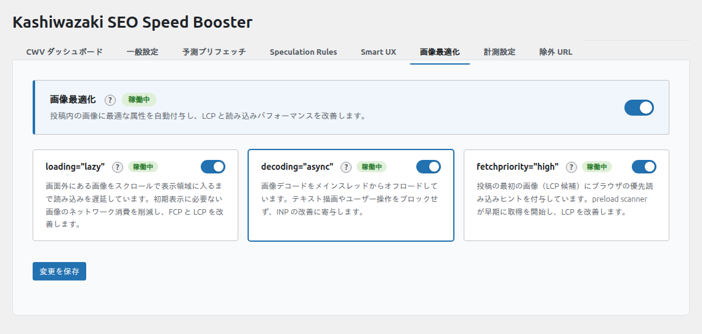

画像最適化
画像タグに loading="lazy"・decoding="async"・fetchpriority="high" を自動付与し、Core Web Vitals の LCP（最大コンテンツの表示時間）・CLS（レイアウトのずれ）を改善します。
画像最適化の概要
このプラグインの画像最適化は、既存の画像タグに HTML 属性を自動的に追加する「属性ベース」の最適化です。画像ファイル自体の圧縮や変換は行いません。WordPress の WP_HTML_Tag_Processor（WP 6.2+）を優先的に使用し、フォールバックとして正規表現ベースの処理も用意しています。
設定画面

設定項目の詳細
遅延読み込み（Lazy Loading） image_lazy
loading="lazy"属性を画像タグに自動付与- ビューポート外の画像の読み込みを遅延させ、初期表示を高速化
- 既に
loading属性が設定されている画像はスキップ（上書きしない） - 効果: ファーストビュー外の画像読み込みを後回しにし、初期表示に必要なリソースへの帯域を確保します。LCP・FCP の数値を直接改善するものではありません
- 注意: LCP 候補の画像に
loading="lazy"が付くと LCP が悪化します。下記の LCP フェッチ優先度と併用してください
非同期デコード image_decoding_async
decoding="async"属性を画像タグに自動付与- 画像のデコード処理をメインスレッドから分離し、ページの応答性を向上
- 既に
decoding属性が設定されている画像はスキップ - 影響する指標: INP（操作に対する応答速度の改善）
LCP フェッチ優先度 image_lcp_fetchpriority
- 個別投稿ページ（
is_singular()）で最初に出力されるアタッチメント画像（多くの場合アイキャッチ画像）にfetchpriority="high"を自動付与 - 同時に
loading="eager"に変更して、lazy loading との競合を防止 - 1ページにつき最初の1画像のみに適用（重複防止）
- ページが切り替わるたびにリセット（
the_postアクションでリセット） - 影響する指標: LCP（メイン画像の表示優先度を上げて LCP を改善）
処理の仕組み
画像最適化は以下の3つのフックを使用して処理を行います。
1. アタッチメント画像フィルタ wp_get_attachment_image_attributes
- WordPress のメディアライブラリから出力される画像に適用
- サムネイル、アイキャッチ画像などが対象
2. コンテンツフィルタ the_content
- 投稿・固定ページの本文内の
<img>タグに適用 WP_HTML_Tag_Processorで安全に属性を操作
3. ブロックフィルタ render_block
- Gutenberg ブロック（
core/image、core/cover、core/media-text）に適用 - ブロック出力の画像タグに対して属性を追加
ノート
WP_HTML_Tag_Processor は WordPress 6.2 以降で利用可能な HTML パーサーです。利用できない環境では、正規表現ベースのフォールバック処理が自動的に使用されます。
既存属性との競合防止
テーマやプラグインが既に設定している属性は上書きしません:
loading属性が設定済みの画像 →loading="lazy"を追加しないdecoding属性が設定済みの画像 →decoding="async"を追加しないfetchpriority="high"はis_singular()の最初の画像のみに限定
ヒント
WordPress 5.5 以降ではコアの lazy loading 機能があります。このプラグインの画像最適化は、コアの処理に加えてコンテンツ内の画像にも decoding="async" や fetchpriority="high" を追加します。
設定の推奨
| 設定 | ブログ | ECサイト | ランディングページ |
|---|---|---|---|
| 遅延読み込み | オン | オン | オン |
| 非同期デコード | オン | オン | オン |
| LCP フェッチ優先度 | オン | オン | オフ（カスタム設定推奨） |
注意
LCP フェッチ優先度は個別投稿ページのみに適用されます。トップページやアーカイブページでは動作しません。トップページの LCP 画像を最適化したい場合は、テーマ側で fetchpriority="high" を個別に設定してください。